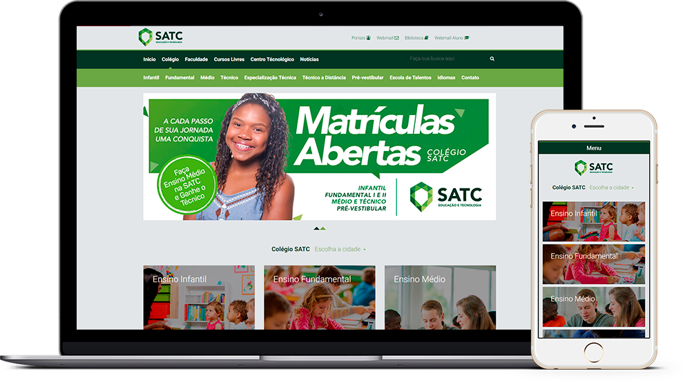
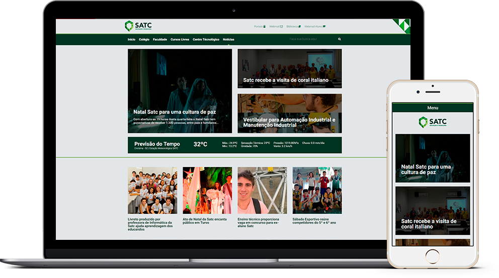

< sobre/ >
O projeto Portal SATC surgiu da ideia de dar uma cara diferente ao atual Portal SATC mas sem sair muito da estrutura que ja é utilizada focando porém na questão responsiva e na usabilidade dos usuários.
No projeto foram utilizadas HTML, CSS e Javascript, além é claro de programas gráficos para o desenvolvimento do layout. Como o projeto é um redesign foram desenvolvidas apenas páginas basicas que podem ser aplicadas a todo o conteúdo que o site precisar.
font font-family
Roboto Sans
A B C D E F G H I J K L M N O P Q R S T U V W X Y Z
a b c d e f g h i j k l m n o p q r s t u v w x y z
1 2 3 4 5 6 7 8 9 0 ! @ # $ % & * ( )
color palette
#7EA64C
#193728
#4F834B
< home page/ >
O Portal SATC é dividido em 5 sessões (Colégio, Faculdade, Cursos Livres, Centro Técnológico e Notícias). Cada sessão possui a mesma estrutura na página principal e nas sub-páginas, seguindo o conceito das imagens abaixo.
Os conceitos foram desenvolvidos para que todas as sessões possuíssem os mesmos elementos, podendo haver elementos específicos para cada sessão mas mantendo uma unidade visual.
< noticias/ >
A página de noticias seria diferente das demais, seguindo mais a ideia de um portal de noticias ou um blog mas utilizando alguns dos elementos das outras páginas.
